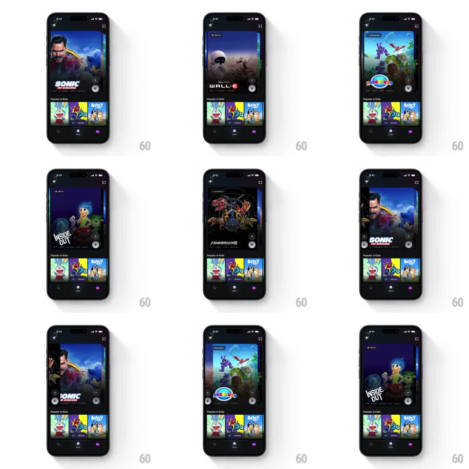

Media
Frame-by-frame

Rebuild this interaction 1:1: JioHotstar's hero title carousel - large poster cards that scroll horizontally with scaling, fading, and snap: the centered card is full size and opaque, neighbors shrink and dim toward the edges, and the title logo swaps with each card.

Rebuild this interaction 1:1: JioHotstar's hero title carousel - large poster cards that scroll horizontally with scaling, fading, and snap: the centered card is full size and opaque, neighbors shrink and dim toward the edges, and the title logo swaps with each card. ## Integration Integration: stack-agnostic spec - springs given as stiffness/damping, timed motions as duration + curve; map every value to your framework and animation library of choice. ## Scene Dark streaming home: hero carousel occupying the top ~60% (big poster art, title logo bottom-left, genre/quality chips), "Popular in Kids" rail + tab bar below. Cards are wide posters with rounded corners (~16px). ## Motion spec Pattern: scroll-linked scaling carousel. - Drag/scroll: cards translate continuously; the card nearest center scales toward 1.0, off-center cards fall to ~0.88 with opacity to ~0.6 (both interpolate by distance from center). - Snap on release: nearest card centers (spring ~260/22, ~350ms). - Title logo + metadata crossfade at center crossing (180ms); logos are artwork images, swap with a slight scale (0.9 -> 1). - The focused card's art has a subtle zoom-drift (Ken Burns, scale 1 -> 1.05 over 6s) while centered. - Edge cards peek ~12% into the viewport. ## Calibration - Scale/opacity vs distance is the core curve - keep it smooth (no stepped states). - Ken Burns drift pauses during interaction, resumes 1s after settle. ## Reduced motion Simple snap with crossfade; no Ken Burns, no scaling. ## Don't miss - The dimming gradient at the card bottom (for logo legibility) is part of the art treatment. - Cards keep constant spacing while scaling (scale around center, not layout).